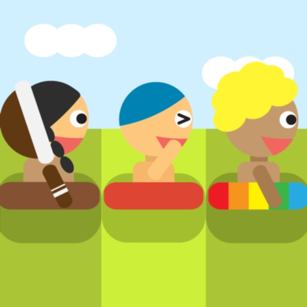
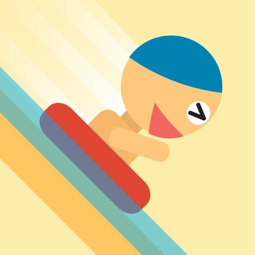
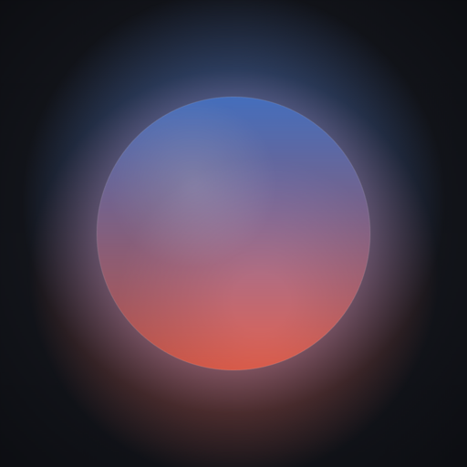
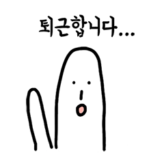
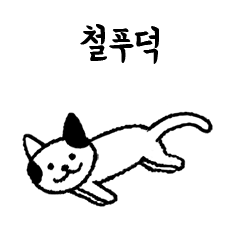
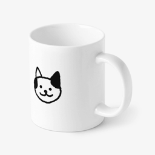

kkiruk studio · seoul · since 2016
매일 쓰게 되는
작은 앱들을 만듭니다.
서울의 1인 인디 스튜디오.
고양이 게임부터 매일 아침 여는 날씨 앱까지 —
혼자 만들고, 직접 운영합니다.
Games
2016년 James Spring으로 시작해, '고양이는 정말 귀여워'로 이어졌습니다.
고양이는 정말 귀여워
Cats are Cute · 10M+ 다운로드 · iOS · Android
고양이를 모아 작은 마을을 꾸미는 힐링 게임. 2018년부터 지금까지 직접 운영하고 있어요.
🏆 App Store Featured📖 App Store 스토리✦ GP Editors' Choice★4.9 리뷰 18만+
고양이는 정말 팡팡
Cats are Cute: Pop Time! · iOS · Android
고양이를 떨어뜨려 합치는 수박게임식 퍼즐. 11단계 진화에 모드도 4가지.
🏅 인디 게임 페스티벌 2021 Top 20🍎 App Store 오늘의 게임📖 App Store 스토리📺 일본 드라마 「無能の鷹」 등장★4.8
팔레트 2048
Palette 2048 · 매일 명화 퍼즐 · iOS
숫자 대신 색으로 맞추는 2048. 매일 명화 한 점의 색이 보드가 되고, 토요일엔 색만 보고 무슨 그림인지 맞혀요.
Song 2048
Song 2048 · 곧 출시 · iOS
색으로 맞추는 2048에 음악을 더했어요 — 유명 앨범 커버의 색이 보드가 되는 데일리 퍼즐.
명언 2048
Quote 2048 · 곧 출시 · iOS
숫자 대신 명언으로 맞추는 2048 — 매일 명언 한 테마가 보드가 되고, 완성하면 다음 테마가 열려요.


전체 작품 보기 — App Store ↗ Google Play ↗
Apps
옷 고르기, 영상 찾기 같은 매일의 작은 고민을 덜어주는 — 하나하나 직접 만든 앱들.
어제보다
Than Yesterday · Weather · iOS
"어제보다 3° 포근해요" — 기온 숫자 대신, 오늘 날씨를 어제와 비교해서 말해주는 날씨 앱이에요.
PinClip
Bookmark Reels & Shorts · iOS
인스타에 저장한 거, 유튜브에 저장한 거 따로 놀죠. 어디서 보든 공유 한 번으로 한 곳에 모아 폴더로 정리해요.
Sidefeed
Trend research for creators · iOS
내 알고리즘 바깥에서 아이디어 찾기 — 12개국 유튜브 인기 영상과 급상승 흐름을 한 화면에서. 크리에이터용 리서치 앱.
Talk Memo
Voice on Watch, text on iPhone · iOS · Apple Watch
달리다 떠오른 생각, 폰 꺼내는 사이 사라지죠. 워치를 탭하고 말만 하면 iPhone에 글로 남아요. Notion·Obsidian 연동, 한 번 사면 평생.
Honest Camera
My First Camera · iOS
아이에게 폰을 쥐어주기 무서운 건 딴 걸 누를까 봐죠. 셔터 하나만 남기고 모드·설정·광고를 다 없앴어요. 사진은 곧장 사진첩에.
Local Link
Travel Map Search · iOS
여행지에서 구글맵이 안 통할 때 — 아는 이름으로 검색하면 현지 문자로 바꿔, 그 나라 사람들이 진짜 쓰는 지도 앱으로 열어줘요.
everykeep
Home Maintenance · iOS
필터 교체·보증 만료·청소 주기처럼 잊기 쉬운 물건 관리를 한곳에. 갈 때가 되면 대신 기억하고 알려줘요.
RunNote
Running Journal · AI Coaching · iOS
실시간 트래킹 대신, 러닝 후 한 줄 회고로 완성되는 기록장. 기록이 쌓일수록 코칭도 내 러닝에 맞춰져요.

데스크브레스
DeskBreath · Breathing Reminder · iOS · macOS
데스크브레스는 다이나믹 아일랜드와 메뉴바에 조용한 호흡 원을 띄워 둡니다. 앱을 닫아도 계속되는 들숨 4초·날숨 6초 리듬과 스트레칭 알림.
테츠로그
Tetsulog · Japan Rail Trip Log · iOS
역을 탭하면 탑승이 기록되고, 탄 노선의 색이 지도 위에 퍼져요. 일본 전국 163개사·571개 노선·10,096개 역 완주 기록 앱.
SwitchBoard
Claude Code monitor · macOS
Claude Code 세션을 여러 개 굴릴 때, 어떤 세션이 내 입력을 기다리는지 메뉴바에서 바로 보여요. Slack·Discord·Telegram 알림까지.
Fun
게임은 아니지만, 웃자고 만든 앱 — 오늘의 운을 부적으로, 오늘 있었던 일을 속보로.
Stickers & Goods
앱 밖에서도 만날 수 있어요 — 메신저 속 스티커로, 책상 위 굿즈로.
限界ねこ (한계고양이)
Genkai Neko · LINE 스티커 · LINE
今日も限界、でもかわいい。 직장인·개발자의 자조 あるある을 대신 말해주는 일본 타깃 스티커.
極限貓 (대만 번체)
Jixian Mao · LINE 스티커 · LINE
今天也好累，但還是很可愛。 대만 上班族·讀書·追星 자조 스티커 (번체 중국어).

손꾸락씨의 직장생활
Mr. Finger Goes to Work · LINE 스티커
오늘도 출근하는 손가락 캐릭터의 직장인 스티커. 5개 언어로 전 세계에 나갔어요.

꼬미와 함께 애옹애옹
Happy Purrsday! · LINE 스티커
'고양이는 정말 귀여워'의 그 고양이들이 메신저에서 움직여요.

굿즈 샵
Cats are Cute official goods
게임 속 고양이들을 손에 잡히는 물건으로 — 공식 캐릭터 굿즈.
Artwork
앱도 게임도 아닌, 그냥 만들고 싶어서 만든 것들.